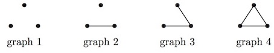

Tom (the cat) and Jerry (the mouse) are playing on a simple graph $G$.
Every vertex of $G$ is a mousehole, and every edge of $G$ is a tunnel connecting two mouseholes.
Originally, Jerry is hiding in one of the mouseholes.
Every morning, Tom can check one (and only one) of the mouseholes. If Jerry happens to be hiding there then Tom catches Jerry and the game is over.
Every evening, if the game continues, Jerry moves to a mousehole which is adjacent (i.e. connected by a tunnel, if there is one available) to his current hiding place. The next morning Tom checks again and the game continues like this.
Let us call a graph $G$ a Tom graph , if our super-smart Tom, who knows the configuration of the graph but does not know the location of Jerry, can guarantee to catch Jerry in finitely many days. For example consider all graphs on 3 nodes:

For graphs 1 and 2, Tom will catch Jerry in at most three days. For graph 3 Tom can check the middle connection on two consecutive days and hence guarantee to catch Jerry in at most two days. These three graphs are therefore Tom Graphs. However, graph 4 is not a Tom Graph because the game could potentially continue forever.
Let $T(n)$ be the number of different Tom graphs with $n$ vertices. Two graphs are considered the same if there is a bijection $f$ between their vertices, such that $(v,w)$ is an edge if and only if $(f(v),f(w))$ is an edge.
We have $T(3) = 3$, $T(7) = 37$, $T(10) = 328$ and $T(20) = 1416269$.
Find $T(2019)$ giving your answer modulo $1\,000\,000\,007$.
main: solve() → █
Solution pending... the mathematician is still thinking.
Nothing here yet - come back when the dust has settled.